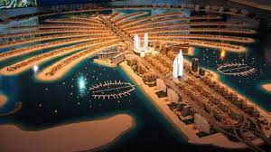
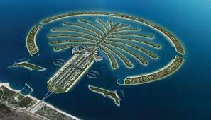

Палма Джумейра е изкуствено създаден остров от Накхел, компания собственост на Дубайското правителство. Тя съдържа стъбло, корона с 17 палмови листа (полуострови) и заобикалящ остров. Островът сам по себе си е 5 на 5 километра. Той добавя 78 километра към бреговата ивица на Дубай. В първата фаза на развитие на Палм Джумейра ще създаде 4 000 сгради с комбинирани вили и апартаменти през следващите 3 или 4 години. Хората закупили жилища там започнали да се местят в техните Палма-Джумерови имоти в края на 2006 година, пет години след като започва разпродажбата на земя, според разработчика на проекта Накхел Пропъртийс. Това е краят на първият етап на канструктиране, който приблизително включва 1,400 вили на 11 от листата на палмовия остров и грубо 2 500 апартамнта на бреговата ивица в 20 сгради наизток от стъблото. Накхел Пропъртийс отбелязват пристигането на първите жители носят едни от най- големите въздушни кораби в Дубай.

ВИЖ ТУК